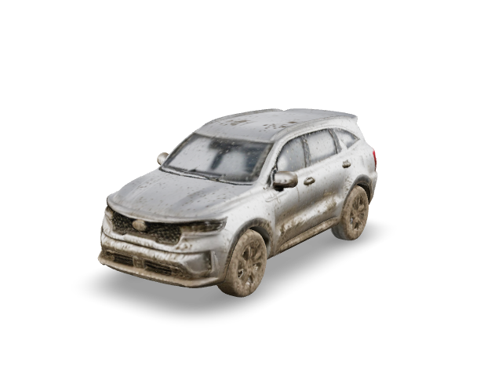
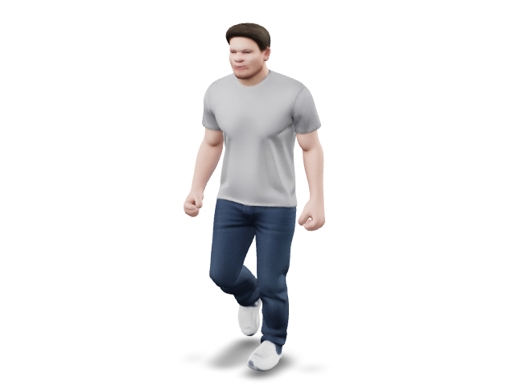
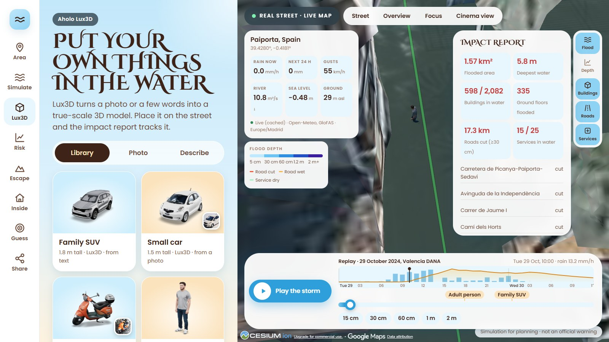

WATERLINE8 · Lux3D, beyond 3D models
Mud, a walk, parts and a hinge —
all made with Lux3D.



What the water leaves
A mud-stained reference image of the SUV (multimodal-to-image), then material transfer onto the same mesh. In the replay, once the water has reached the car and starts to fall, the muddy model swaps in.
A rig that said no
Rigging refused the Library person: arms down against the body, not a T- or A-pose. So Lux3D made an A-pose image of the same person, image-to-3D built it, then rig and retarget gave it a walk — four tasks, about 3 minutes.
Take it home
Multi-format export gives USDZ for AR Quick Look and STL for printing (80 mm miniatures). Any placed object can be exported live from the app.
